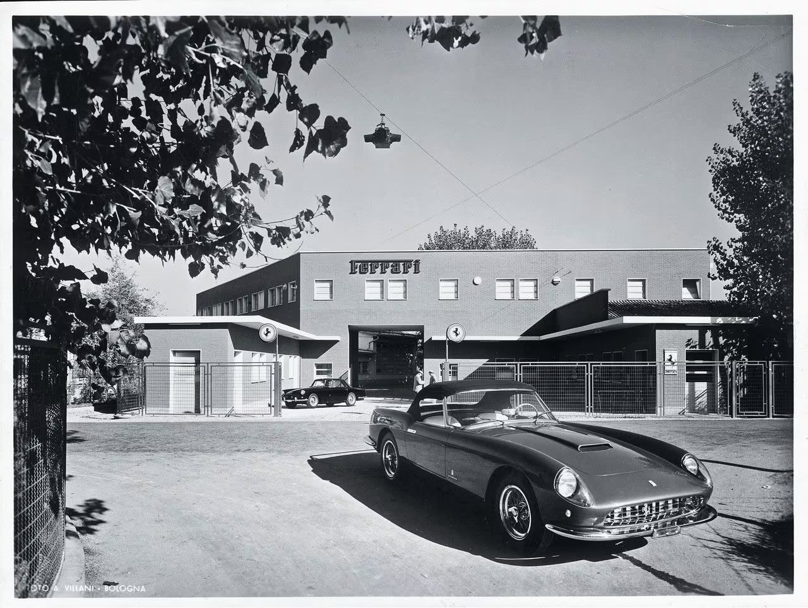

|
AUTOS | PROMOCIONES | MENU |
| TODAS LAS NOTICIAS |
|||
| 07 Ago 2020Passion | |||
Sede de Ferrari y Maranello: historia de dos ciudades |
|||
|  | |||
07 agosto 2020 |
||||
|---|---|---|---|---|
| Gianni Biondillo | ||||
|
La sede central de Ferrari en Maranello está formada por una amalgama de edificios de estilos muy diferentes, a veces incluso discordantes, diseñados por arquitectos de fama mundial. Descubrimos por qué esta “ciudad empresarial” a la italiana es única | |||
|
Para muchos, Maranello (la pequeña población donde se sitúa la fábrica de Ferrari) es un ejemplo clásico de “ciudad empresarial”. Pero, ¿es correcta esta asociación? El concepto de ciudad empresarial es una evolución de las ciudades industriales nacidas al calor de la Revolución Industrial, del deseo de empresarios progresistas de crear asentamientos que respondieran a las necesidades de las personas que vivían y trabajaban en ellas. Eran poblaciones autónomas y autosuficientes (ofrecían alojamientos, servicios, escuelas, lugares de culto e incluso salas de espectáculos) en las que todo giraba en torno a la fábrica, la “visión” de emprendedores de mente abierta que sabían que brindar a los trabajadores una buena calidad de vida mejoraba la calidad del producto. |
|||